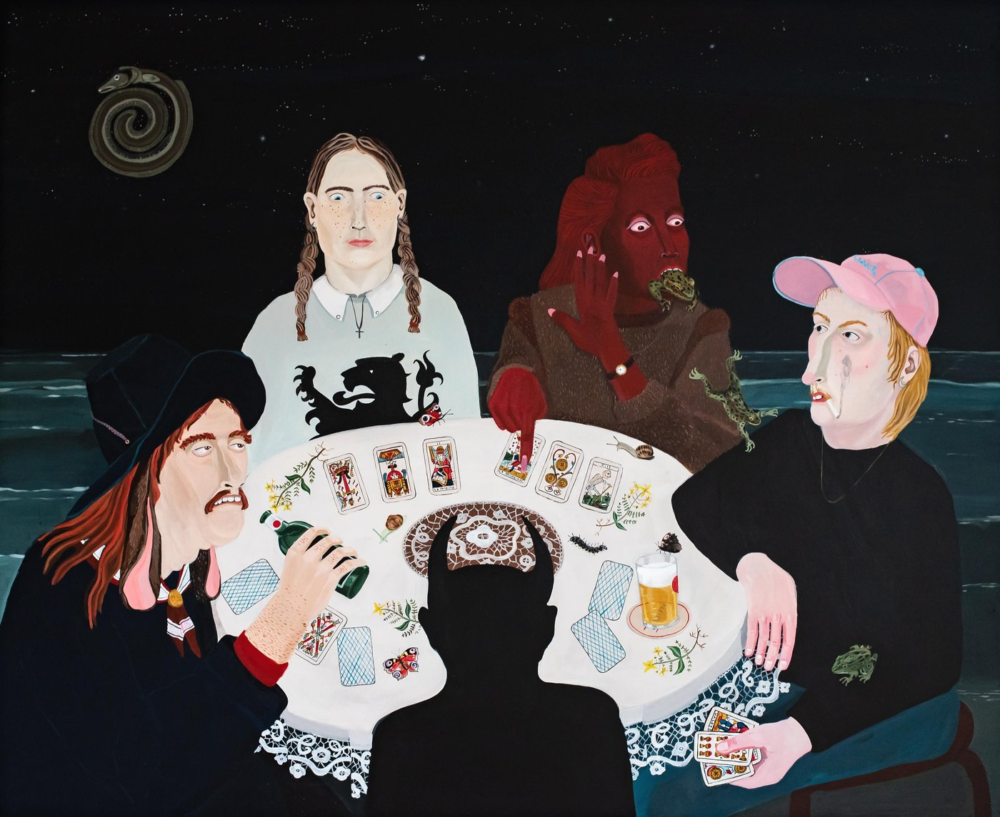
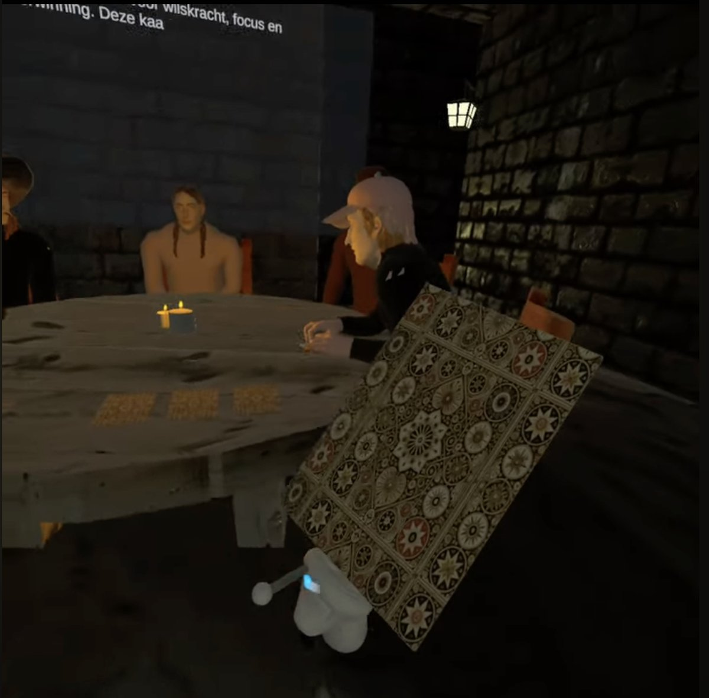
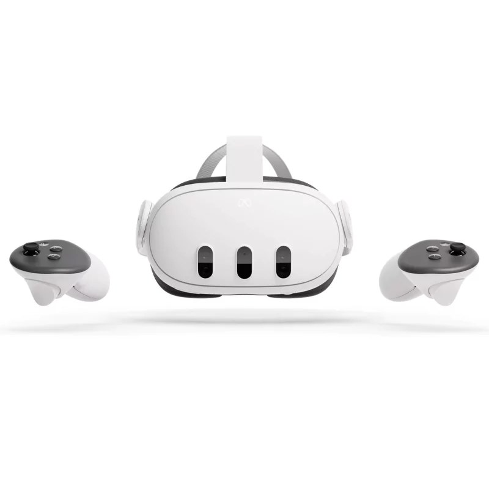
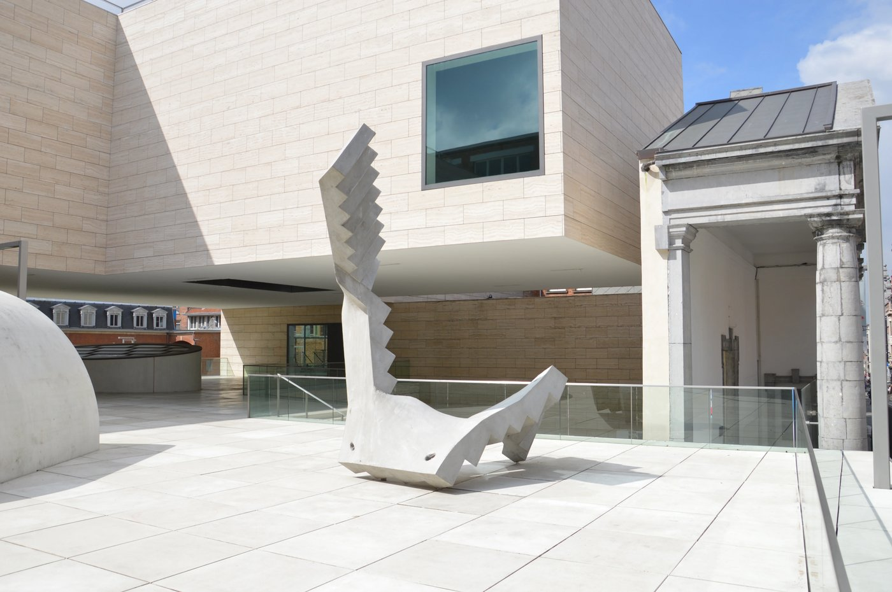
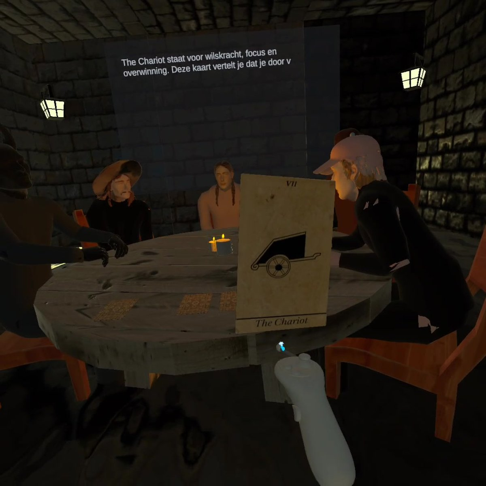

Schaduwen
A VR experience built for Museum M in Leuven, in which the visitor — Sophie — works through self-reflection using tarot cards and an immersive, mysterious world. The scenario moves from self-doubt after a separation toward letting go and a new direction.
Process
Shadows as a metaphor for a mysterious, emotional message about self-reflection and personal growth — built as an interactive VR experience rather than a passive film.
Concept
The idea

The visitor draws tarot cards that confront her with her own thoughts — “VR opens the door to self-discovery through immersive experiences.”
Interaction
Tarot & reflection

Built in Unity, with the environment and characters modelled in Blender and Meshy.
Technology
Unity & 3D

Set in Museum M, Leopold Vanderkelenstraat 28, 3000 Leuven — where modern architecture meets a historic facade, just like the contrast between light and shadow in the installation.
Location
Museum M, Leuven

See the full walkthrough of the VR experience below.
View end product
Watch the demo

End product
Full VR walkthrough · 2 min · Unity
JV STUDIO
Share your email to get updates from my portfolio.